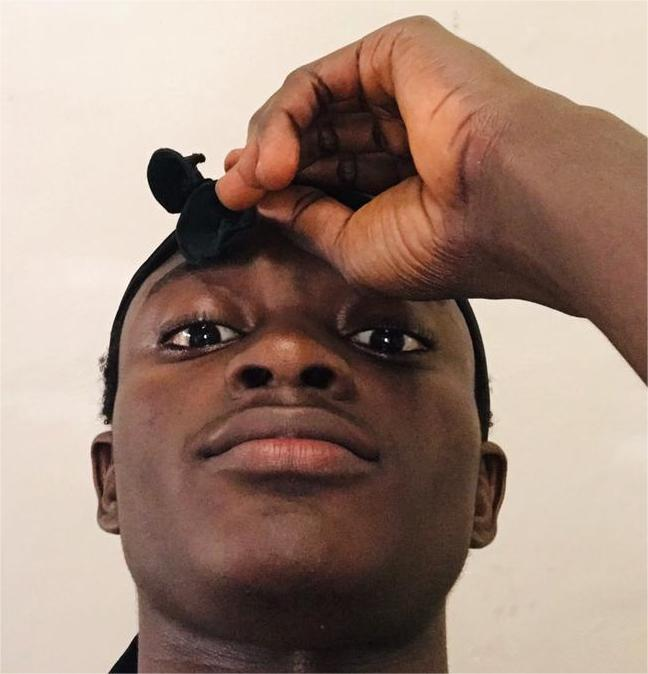

Slack Name: @Jones
Current Time in UTC:
Current day of the week:
Slack Email: sydneydaniel76@gmail.com
My tech goals for the next two years
- Master Frontend Fundamentals: Develop a strong foundation in HTML, CSS, and JavaScript. Learn responsive design, accessibility, and performance optimization.
- Frontend framework Mastery: Build complex applications using ReactJS,AngularJs, NextJs. Stay up-to-date with the latest frontend best practices and features.
- UI/UX Design Skills: Learn design principles, human-centered design, and user research. Familiarize yourself with design tools like Figma, Sketch, or Adobe XD.
- Intents to Work at paystack: Take time to familarize myself with paystacks tech stack and build projects with those stacks.
- Advanced Frontend Topics: Learn about web performance optimization, PWA's, and modern web APIs. Experiment with new technologies like WebAssembly and WebGL.
- Lead Frontend Projects: Lead frontend projects from conception to deployment. Mentor junior developers and conduct code reviews
- Collaborate with Design Teams: Work closely with designers to implement designs pixel-perfectly. Provide feedback on design decisions and suggest improvements.
- Bag a role at Paystack: More update on this later, I will update when i do get a role at paystack.
- Collaborate with Design Teams: Work closely with designers to implement designs pixel-perfectly. Provide feedback on design decisions and suggest improvements.
- Paystack's Product Development: Contribute to Paystack's product development, focusing on frontend features. Collaborate with cross-functional teams to deliver high-quality products.
Year 1
Year 2
Additional Links
Visit HNG Tech to know more about HNG Internship.
Vist Keyword.dog to learn to dominate search rankings.
Visit scrapeanyweb.site to scrape any website.